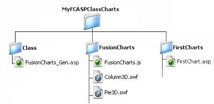

| Basic Setup |
FusionCharts ASP Class basically consists of a file : FusionCharts_Gen.asp. |
For convenient use of FusionCharts ASP class within your projects, we will suggest you to follow the folder structure described below : (though this is not a hard and fast rule to follow)
|
|
And you are ready to unleash the power of FusionCharts XT with ASP! You can save your applications within different folders inside the root MyFCASPClassCharts folder so as it builds up the following hierarchy. |

|
You may go for any other folder structure if you wish; just make sure to keep FusionCharts_Gen.asp in the Class folder. Let’s go ahead and create our first chart with FusionCharts ASP class. |